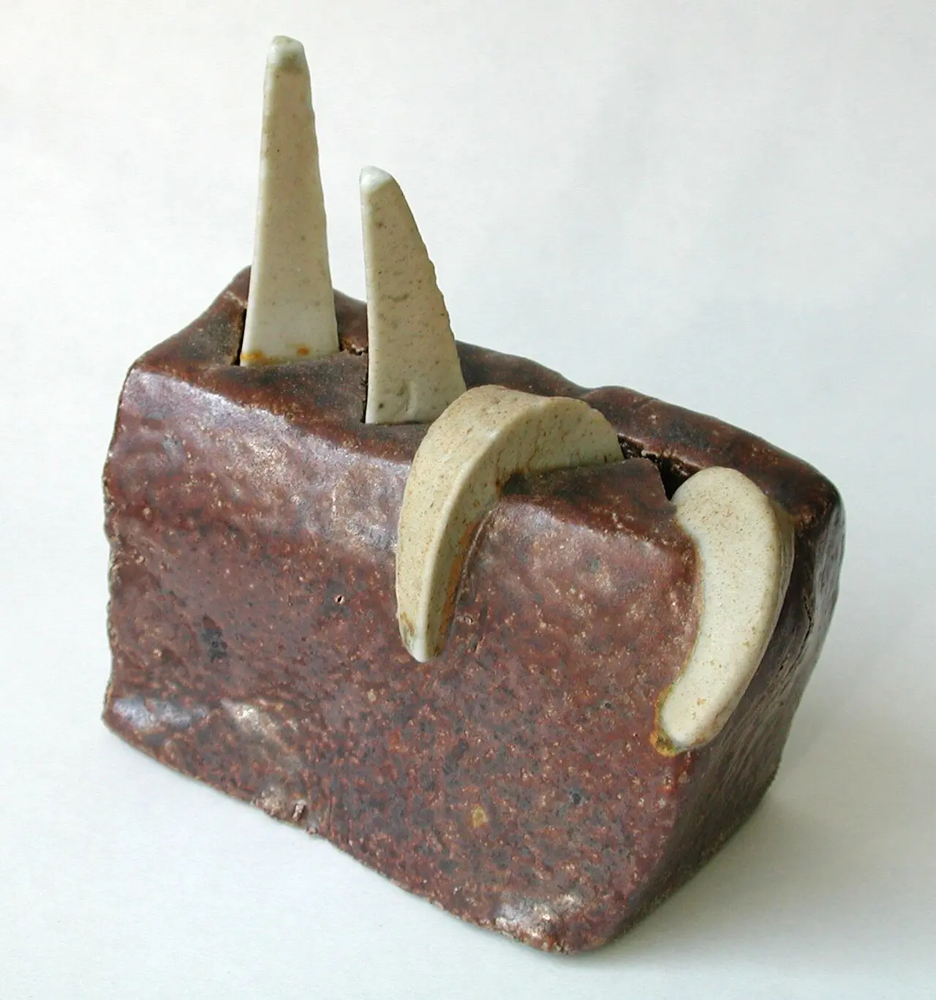
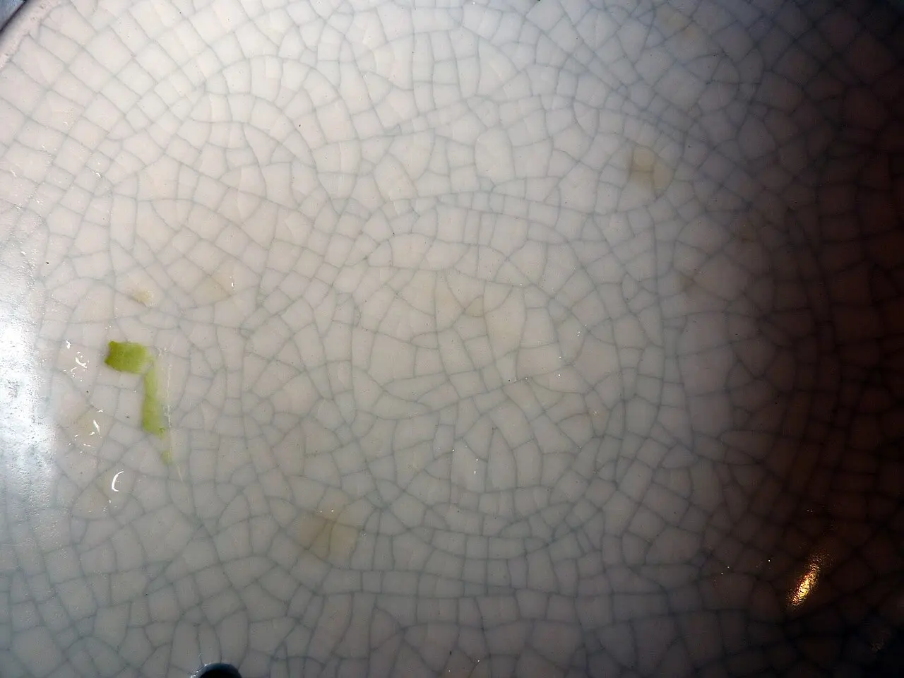
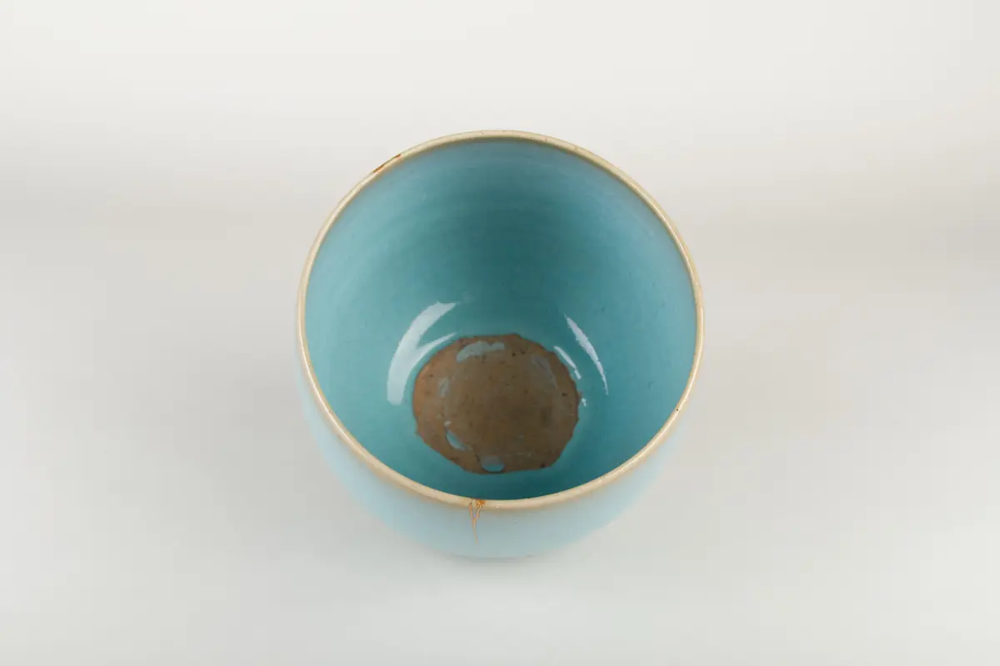
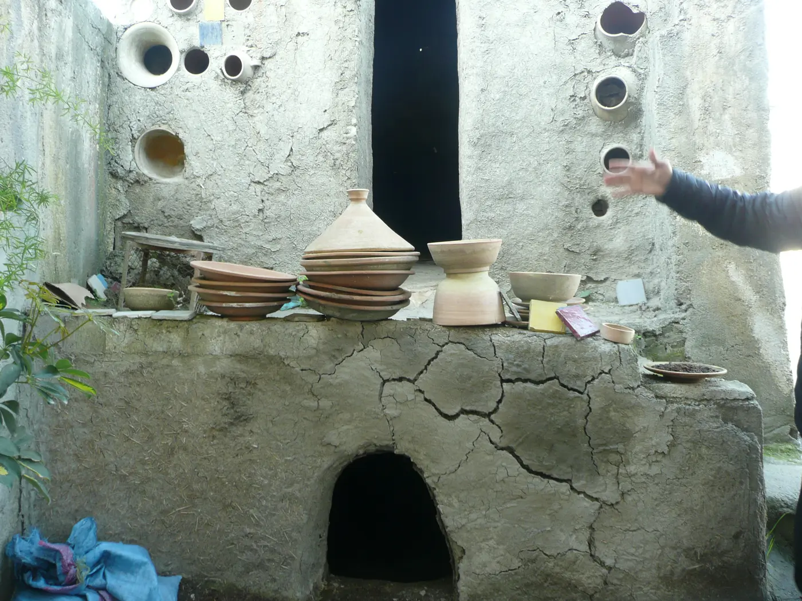
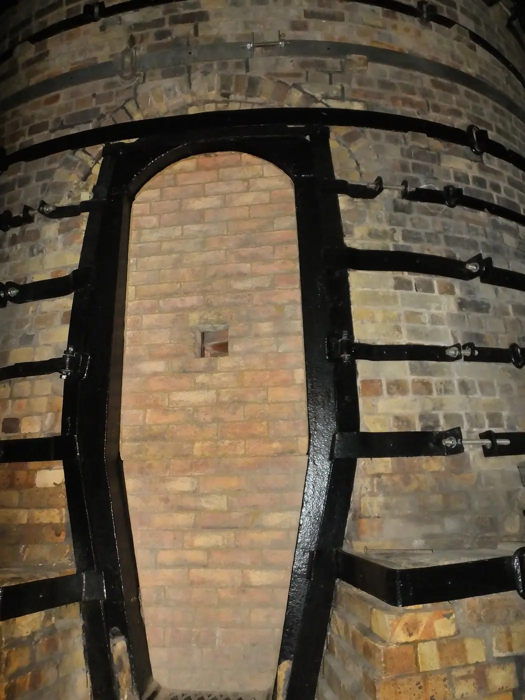

{kind=link}
Prerequisite
Documented making and surface tests; access to an authorized kiln operator or supervised studio.
Phase 07 · 7–10 hours + kiln cycles
The kiln is not a verdict delivered by magic. Learn to reconstruct what happened from event, location, material records, witness cones, and physical evidence.

Aim
Documented making and surface tests; access to an authorized kiln operator or supervised studio.
You can distinguish drying and firing evidence, read cones as heatwork, build competing hypotheses, and make conservative use decisions.
A drying comparison, firing record, defect atlas, evidence diagnosis, and functional-use decision.
If a pot breaks in the kiln, what evidence shows whether the cause was moisture, construction, handling, or firing?
When was the change first observed? Where did it occur? What physical trace and process record support the claim? A cause is stronger when it predicts the fracture path or defect pattern.
Air itself is not the standard explanation for “exploding pots.” Residual water turning to steam, thick or uneven sections, restricted escape paths, and aggressive early heating are central concerns. Follow your studio’s drying and firing protocols.
Before making hollow forms, learn your studio’s limits for thickness, mass, internal drying access, and vents. A vent supports drying and inspection; it does not make damp ware safe. Never leave unapproved metal, foil, plastic, wood, plaster, or other objects inside ordinary kiln work. Make three matched hollow test forms with safe vent paths. Dry one evenly covered, one with the rim exposed, and one on a nonabsorbent support. Weigh or measure them at consistent intervals if possible.
Heatwork reflects the combined effect of temperature and time on ceramic materials. A witness cone bends in response to that work near the ware. A controller reading and a cone tell related but different stories.
Cone 06 and cone 6 are far apart. The leading zero marks a lower range; never drop it in notes or labels.
Oxidation, reduction, airflow, and vapor affect color and chemistry. Record the actual studio process rather than assuming.
Shelves and zones can receive different heatwork. Record placement so repeated variation becomes diagnosable.
Using a studio firing you are permitted to observe, record kiln ID, date, program or schedule, target cone, witness-cone result by zone, atmosphere, load notes, and cooling notes. Pair every test tile with its exact location.
Explain one discrepancy between controller data and cones without treating either as infallible.

A network of glaze cracks can involve clay–glaze fit and process history. Record when it appeared, whether it changes, and whether the ware’s intended use makes the condition unacceptable.
Glaze crazing by Lara604, CC BY-SA 2.0. Source
| Evidence | Competing explanations | Useful next test |
|---|---|---|
| Crack follows join | Weak integration; moisture mismatch; drying stress | Matched seam coupons with controlled drying |
| Fine glaze network | Fit mismatch; delayed stress; intentional crackle system | Known tile series; studio-approved fit/use evaluation |
| Glaze crawls into islands | Dust/grease; poor adhesion; thick application; shrinkage | Cleanliness and application-thickness comparison |
| Pinholes or craters | Gas release; glaze maturity; application; firing/cooling | Repeat tiles with controlled layer and firing position |
| Body warps | Making stress; uneven support; heatwork; pyroplastic movement | Process-matched tiles by orientation and kiln zone |
| Sharp glaze flakes / shivering | Glaze–body fit; edge geometry; process history | Reject from use; stop this combination and seek technical review |
| Steam damage or blowout | Residual moisture; thick/closed section; aggressive early heat | Do not refire; review drying evidence and firing protocol |
| Straight late fracture / dunting | Thermal stress or cooling; prior flaw | Compare fracture, timing, form geometry, and firing record |
| Bloating or softened body | Gas during vitrification; excess heatwork; body incompatibility | Check cones, body range, and kiln zone |
| Dry/porous or slumped/runny | Underfire or overfire; application; wrong range | Verify materials and cones before a controlled repeat |
| Glaze run | Excess thickness, layering, heatwork, or formulation | Protect shelves and test at smaller scale; do not normalize the defect |
For four real examples, include photographs from two angles, event first observed, location, materials, firing record, two plausible causes, evidence for/against each, and the smallest safe test that separates them.
Inspiration · look comparatively
Compare glaze response with two historic approaches to containing heat. Both kiln photographs are context, not operating guidance; follow authorized studio procedures and equipment-specific instruction.



Knowledge check · 3 questions
Choose one answer for each situation. Open a hint when needed; explanations appear after you check all three.
Phase checkpoint · 24 points
| Criterion | 1 | 2 | 3 | 4 |
|---|---|---|---|---|
| Observation | Vague label | Some physical detail | Pattern/location/timing recorded | Repeatable documentation |
| Firing literacy | Cones as temperature | Partial distinction | Explains heatwork and location | Integrates controller, cones and load |
| Hypotheses | Single guess | Two guesses | Evidence weighs alternatives | Disconfirming tests designed |
| Safety | Unsafe action | Needs prompting | Follows studio limits | Uses conservative escalation |
| Test quality | Changes many variables | Weak comparison | Controlled comparison | Test directly separates causes |
| Decision | Unsupported | Overconfident | Proportional to evidence | Limits and next steps explicit |
{kind=link}
{kind=link}
{kind=link}
{kind=link}